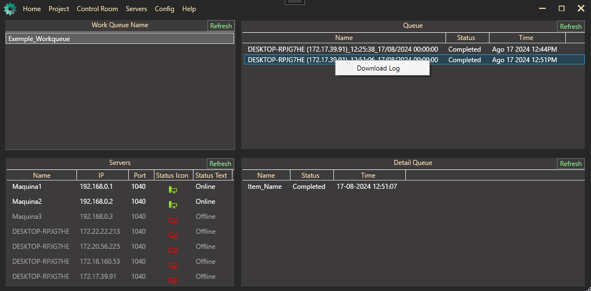

Return to home
Control Room
Detailed Features of the Control Room
-
Real-Time Monitoring:
The Control Room allows real-time monitoring of all active machines in the environment. On the interface, you can see the machine name, current status (Online or Offline), and IP address. This makes it easy to quickly identify any machine that may be experiencing issues.
-
Work Queue Management:
The Control Room interface displays work queues, such as the “Example Workqueue,” where you can see details like project name, session ID, machine name, task status, and completion time. This allows for efficient task management, ensuring that all activities are monitored and completed as planned.
-
Log Analysis:
The Control Room provides the ability to access and download detailed execution logs. These logs are essential for tracking and diagnosing any issues that occur during the automation process. The "Download Log" option facilitates later analysis and maintains a complete history of operations.
-
Alerts and Notifications:
Although not explicitly shown in the image, alert and notification systems are common in automation platforms to inform administrators about failures or issues in executions. This ensures a quick and effective response to any incident.

Benefits of Using the Control Room
-
Operational Efficiency:
By centralizing the monitoring and management of machines, the Control Room significantly contributes to operational efficiency. It allows administrators to have a clear and consolidated view of all ongoing activities, facilitating informed decision-making.
-
Reliability and Maintenance:
The ability to monitor in real-time and analyze detailed logs helps maintain the reliability of automated processes. Any problem can be quickly identified and resolved, minimizing downtime and ensuring the continuity of operations.
-
Security and Compliance:
The Control Room helps ensure data security and compliance with standards and regulations. The detailed recording of all activities and the ability to audit processes are essential for maintaining the integrity and security of the automation environment.
Practical Examples
-
Use Cases:
In a manufacturing industry, the Control Room can be used to monitor and manage production robots, ensuring that all process steps are completed without interruptions. In an IT environment, it can manage servers and automated processes, ensuring service availability and performance.
-
Case Studies:
A case study might demonstrate how a logistics company used the Control Room to optimize its delivery operations, reducing response time and improving customer satisfaction through efficient monitoring and rapid problem resolution.
User Interface
-
Interface Description:
The Control Room interface is intuitive and well-organized. At the top, you’ll find the work queue section, where you can see details like project name, session ID, machine name, status, and completion time. Below, there is a list of machines with their respective IP addresses and statuses (Online or Offline).
-
Ease of Use:
The usability of the interface is a strong point, making it easy to manage and monitor machines. The clear layout of information and the ability to download execution logs make the Control Room a powerful and accessible tool for system administrators.